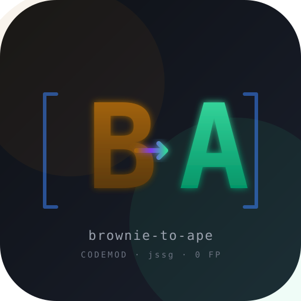

Automated Brownie → ApeWorx Ape migration codemod. 17-pass jssg transform, 250 tests (90 fixture + 125 Vitest + 35 pytest), validated on 5 real OSS repos with zero false positives. Built for the Codemod Boring AI hackathon.
Cast file: demo/demo.cast
(44 events, ~14s).
Reproduce locally: bash demo/run-demo.sh.
| Repo | Shape | .py modified | Patterns | FP |
|---|---|---|---|---|
| yearn/brownie-strategy-mix | Yearn DeFi strategy template | 4 / 7 | ~33 | 0 |
| aave_brownie_py_freecode | Aave DeFi integration | 4 / 5 | ~24 | 0 |
| smartcontract-lottery | Multi-network + VRF | 5 / 7 | ~30 | 0 |
| brownie_fund_me | Oracle integration | 5 / 6 | ~21 | 0 |
| brownie-mix/token-mix | Token tutorial | 4 / 5 | ~62 | 0 |
Brownie's signature {"from": acct, "value": v} dict at the end of a method call becomes plain kwargs. Handles trailing kwargs, multi-line, single + double + mixed quotes.
import brownie def test_insufficient_balance(accounts, token): balance = token.balanceOf(accounts[0]) token.approve(accounts[1], balance + 1, {'from': accounts[0]}) with brownie.reverts(): token.transferFrom( accounts[0], accounts[2], balance + 1, {'from': accounts[1]} )
import ape def test_insufficient_balance(accounts, token): balance = token.balanceOf(accounts[0]) token.approve(accounts[1], balance + 1, sender=accounts[0]) with ape.reverts(): token.transferFrom( accounts[0], accounts[2], balance + 1, sender=accounts[1] )
Bare network.show_active() rewrites correctly inside subscripts (config["networks"][...]) and f-strings.
from brownie import network, config, accounts def get_account(): if ( network.show_active() in LOCAL_BLOCKCHAIN_ENVIRONMENTS or network.show_active() in FORKED_LOCAL_ENVIRONMENTS ): return accounts[0] def deploy_mocks(): print(f"Active network is {network.show_active()}")
from ape import networks, config, accounts def get_account(): if ( networks.active_provider.network.name in LOCAL_BLOCKCHAIN_ENVIRONMENTS or networks.active_provider.network.name in FORKED_LOCAL_ENVIRONMENTS ): return accounts[0] def deploy_mocks(): print(f"Active network is {networks.active_provider.network.name}")
Known Brownie exceptions are mapped to their Ape equivalents. The exceptions import is kept (Ape exposes ape.exceptions too).
from brownie import network, accounts, exceptions import pytest def test_only_owner_can_withdraw(): bad_actor = accounts.add() with pytest.raises(exceptions.VirtualMachineError): fund_me.withdraw({"from": bad_actor})
from ape import networks, accounts, exceptions import pytest def test_only_owner_can_withdraw(): bad_actor = accounts.add() # TODO: Ape uses accounts.import_account_from_private_key with pytest.raises(exceptions.ContractLogicError): fund_me.withdraw(sender=bad_actor)
Wei calls become convert calls; from ape.utils import convert is auto-injected at the top of the file. Idempotent — won't double-import.
from brownie import Wei, accounts def amounts(): base = Wei("1 ether") fee = Wei("100 gwei") return base, fee
# TODO(brownie-to-ape): no direct Ape equivalent for: Wei from ape import accounts from ape.utils import convert def amounts(): base = convert("1 ether", int) fee = convert("100 gwei", int) return base, fee
Brownie's whale-impersonation idiom maps cleanly to Ape's dedicated API. Only fires when force=True is present — bare accounts.at(addr) stays alone (different operation).
from brownie import accounts @pytest.fixture def whale(): return accounts.at(WHALE_ADDR, force=True) @pytest.fixture def existing_owner(): # No force=True — just address lookup, codemod leaves alone. return accounts.at(OWNER_ADDR)
from ape import accounts @pytest.fixture def whale(): return accounts.impersonate_account(WHALE_ADDR) @pytest.fixture def existing_owner(): # No force=True — just address lookup, codemod leaves alone. return accounts.at(OWNER_ADDR)
Multi-pass composition: inner network.show_active() rewrite (Pass 2b) and outer interface.X() TODO (Pass 10) compose cleanly because Pass 10 replaces only the closing ) token.
def get_lending_pool():
addr_provider = interface.ILendingPoolAddressesProvider(
config["networks"][network.show_active()]["lending_pool_addresses_provider"]
)
pool_addr = addr_provider.getLendingPool()
pool = interface.ILendingPool(pool_addr)
return pooldef get_lending_pool():
addr_provider = interface.ILendingPoolAddressesProvider(
config["networks"][networks.active_provider.network.name]["lending_pool_addresses_provider"]
) # TODO(brownie-to-ape): interface.X(addr) -> Ape's Contract(addr) with explicit ABI
pool_addr = addr_provider.getLendingPool()
pool = interface.ILendingPool(pool_addr) # TODO(brownie-to-ape): interface.X(addr) -> ...
return poolape test 38/38 PASSWalks through the full pipeline: codemod application, AI-step manual cleanup (~30 LOC across 4 files), and a passing pytest log. The canonical case study.
DeFi-shaped patterns (whale impersonation, multi-network config, complex tx-dict) tested against the official Yearn strategy template that every Yearn dev forks.
5 features deliberately rejected (browser WASM playground, Stryker score >50%, full accounts.add auto-rewrite) — each from FN-vs-FP scoring math.
| Repo | Stars | PR | What it adds |
|---|---|---|---|
| eth-brownie/brownie 🔥 | 2.6k⭐ | #2145 | Migration tooling section in upstream Brownie's README — every Brownie user lands here |
| ApeWorX/ape | 1.1k⭐ | #2780 | "Alternative Codemod" section in the official Ape Brownie migration guide |
| ApeWorX/skills 🔥 | — | #9 | New migrate-from-brownie skill for Claude/LLM agents (Ape's own LLM skills repo) |
| codemod-com/codemod | 8k⭐ | #2168 | Full brownie-to-ape migration guide in Codemod platform docs (218 LOC) |
| bkrem/awesome-solidity 🔥 | 7k⭐ | #173 | Annotation on existing Brownie entry with deprecation notice + migration tool |
| rajasegar/awesome-codemods | — | #7 | Adds Python section with 4 entries (incl. brownie-to-ape, django-codemod, bowler, LibCST) |
| Kludex/awesome-python-codemods | — | #1 | First PR in their repo; adds brownie-to-ape to the Codemods list |
Plus issue ApeWorX/ape#2774 filed 4 days before the PR with cross-link comment for closure trail.
15+ negative tests prove the codemod does NOT fire in FP-risk contexts: lambda, list comprehension, walrus operator, async/await, OrderedDict, helper functions, malformed Python, dict spread, byte-string keys, brownie-only-in-strings.
Validated on 5 OSS repos covering different shapes: tutorial token contract, oracle (Chainlink), multi-network lottery + VRF, Aave DeFi integration, and the Yearn Finance strategy template (used by all Yearn strategy developers).
Patterns the codemod can't safely auto-rewrite (contract artifacts, accounts.add private key, unknown exceptions) get specific, actionable inline TODO comments. AI cleanup steps know exactly what to fix.
Bundled scripts/preview.sh for dry-run with structured stats, scripts/benchmark.sh
for repeatable timing across 5 repos, scripts/migrate_config.py for
brownie-config.yaml → ape-config.yaml conversion, and an asciinema cast.